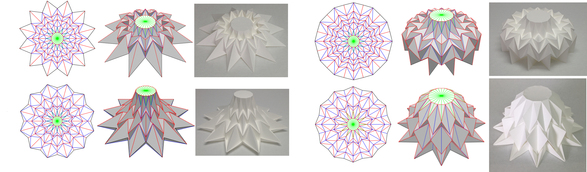

Geometry of Axisymmetric 3D Origami Consisting of Triangular Facets
Yan Zhao,
Yoshihiro Kanamori,
and Jun Mitani
University of Tsukuba

Abstract:
We propose a novel design method for 3D origami consisting of triangular facets with an axisymmetric structure. Our method interactively designs a rotationally-symmetric crease pattern and then analytically calculates the 3D origami with real-time human interaction. The proposed method enables us to change one parameter to axisymmetrically deform the 3D origami while preserving its developability. By changing another parameter, our method leads to a way of folding a 3D origami called "along-arc flat-folding". By using our prototype system, we interactively explore various origami designs before actually making them. Several 3D origami pieces and folding sequences are presented to demonstrate the validity.
Prototype system
Publications:
- Yan Zhao, Yoshihiro Kanamori, Jun Mitani: "Geometry of Axisymmetric 3D Origami Consisting of Triangular Facets", Journal for Geometry and Graphics, Vol. 21, No. 1, pp. 107-118, 2017.
[Link]
[Preprint]
- Yan Zhao, Yoshihiro Kanamori, Jun Mitani: "Geometry of axisymmetric 3D origami consisting of triangle facets", in: Proceeding of the 17th International Conference on Geometry and Graphics, No. 11, 2016-8. [Preprint]
- Yan Zhao, Yoshihiro Kanamori, Jun Mitani: "Simulation of Triangle-based Axisymmetric Rigid Origami", ICMMA 2016 'Origami-Based Modeling and Analysis', 2016-11.
[Poster]
BibTeX Citation
@article{zhao2017JGG,
title = {Geometry of Axisymmetric 3D Origami Consisting of Triangular Facets},
author = {Yan Zhao and Yoshihiro Kanamori and Jun Mitani},
journal = {Journal for Geometry and Graphics},
volume = {1},
number = {21},
pages = {107-118},
year = {2017}
}